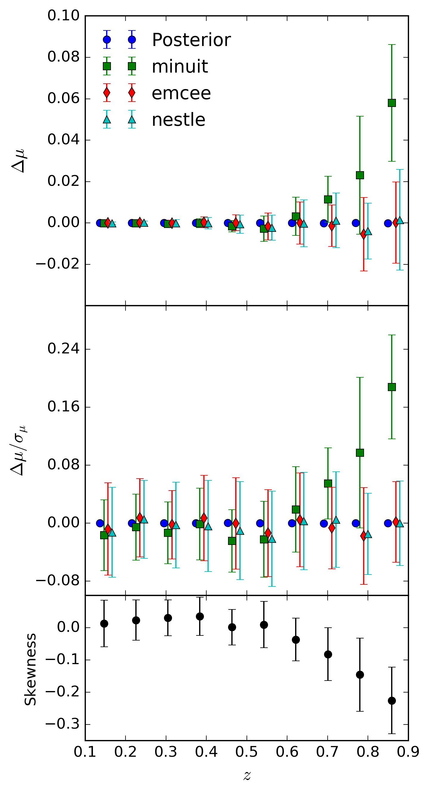
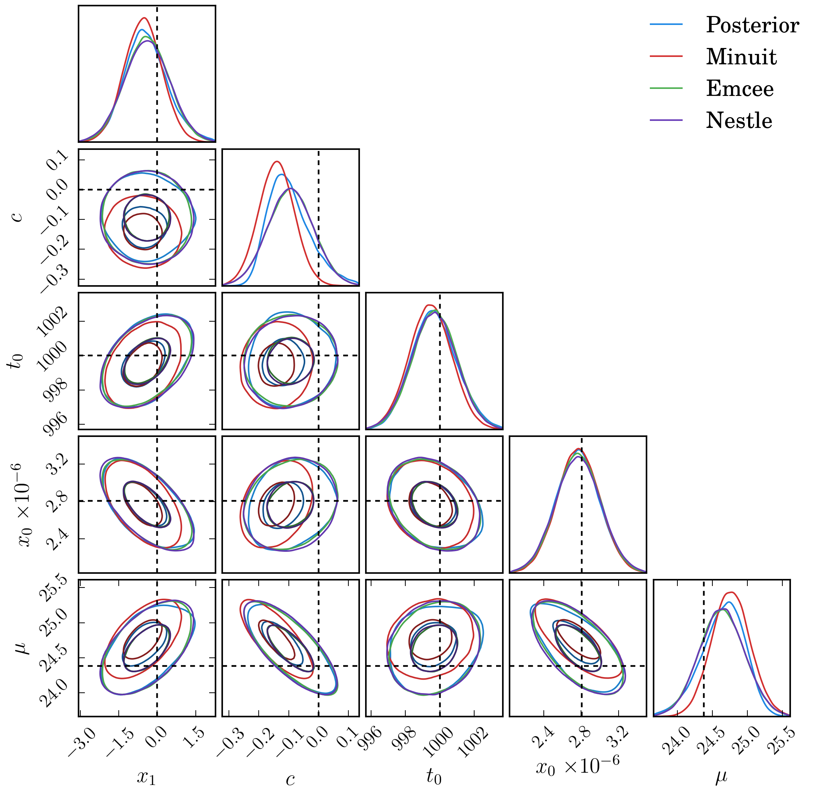
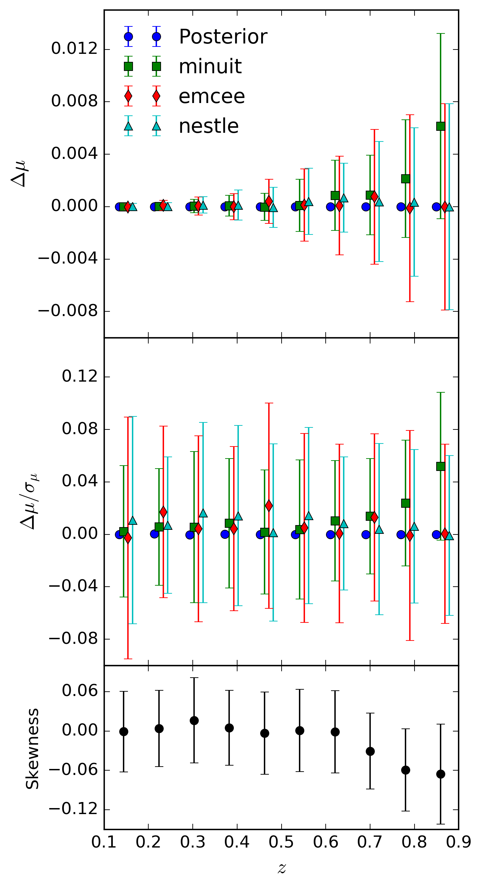
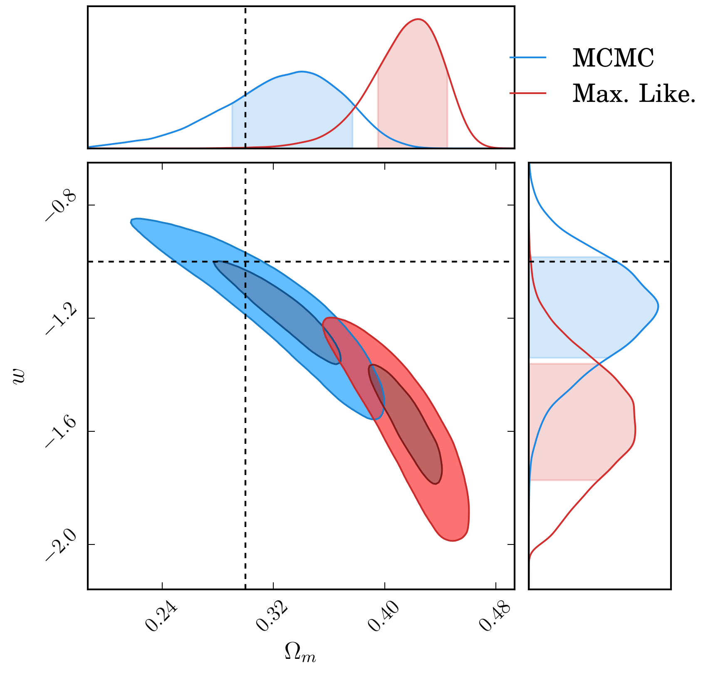
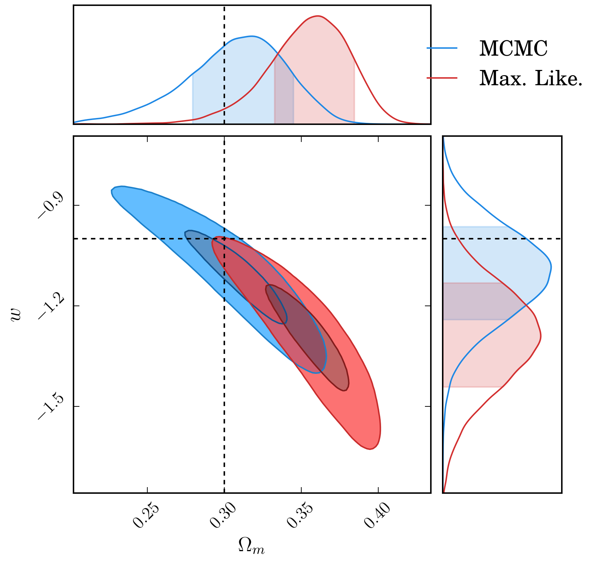

dessn.investigations.gaussianity package¶
In most supernova cosmology analyses, the analysis is performed not using the observed light curves, but using SALT2 summary statistics. Whilst this choice does provide strong computational benefits, the underpinning assumption of validity for using the summary statistics - namely that they are Gaussian - is often assumed.
In order to provide a more rigorous justification for utilising this assumption, I investigate how well the summary statistics reflect the full posterior surface of the SALT2 fits under a variety of conditions and supernova parametrisation.
Introduction¶
To begin with, we pick the optimal case for a supernova: a high signal-to-noise
signal observed regularly throughout the entire supernova lifespan for
a supernova with an exactly determined redshift. We generate
a value for supernova parameters \(x_0,\, x_1,\, t_0,\, c,\, z\) and realise
a SALT2 light curve using sncosmo. The light curve realised is shown below.
{kind=link}
A realised light curve in the DES filters, with 30 observations in each band spanning a time frame of 60 days before and after the peak time.
We then fit the light curves to get summary statistics using sncosmo, and compare
this to a separate MCMC fit which records the entire posterior surface. In this optimal case
we hope to see a high degree of agreement between the summary statistics and full posterior
surface.
{kind=link}
The two posterior surfaces agree closely. Contours shown are for 0.5, 1, 2 and 3 sigma levels.
This simple example provides the framework for a more sophisticated analysis. In it, we vary the supernova parameters and observation scenario (time pre-peak, and post-peak, frequency of observations) and determine the difference between the full posterior surface and summary statistics via a given metric, and determine in what regions of parameter space might the gaussianity assumption not adequately hold.
Our primary parameter of interest is not any of the fit parameters, but is instead the distance modulus \(\mu\), as it is biases in the distance modulus which will bias our cosmology. Using fiducial values for \(\alpha\) and \(\beta\) from [Re7a0e5d21dfc-1], we have the distance modulus as
where \(m_B^*\) is calculated using sncosmo. Using this relationship, and moving
the nuisance parameter \(M\) to the other side, we can convert our multi-dimensional
posterior surface into a single dimension, and then check for any biases in the mean and
variance of the \(\mu+M\) distribution. Doing this for the simple example above gives
us the distributions shown below, which have \(\Delta (\mu+M) = 0.003\)
and \(\Delta (\sigma_{\mu+M}) = 0.0007\), a negligible difference for use in cosmology.
To rephrase the above for more clarity, what we are doing is comparing the distribution of \(\mu +M\) from a full posterior surface against the distribution obtained from using summary statistics (assuming gaussianity).
{kind=link}
The posterior surfaces from the previous figure transformed into distance modulus.
Generalisation¶
By finding the difference in mean and standard deviation of the \(\mu+M\) distributions from assuming a Gaussian approximation and examining the full posterior surface, we can investigate the effect of various observational conditions. Parameters which may be of interest are the peak signal to noise of the light curves, the number of observations, and when observations for a supernova begin (ie how early do we catch the supernova before peak) - in addition to stretch, colour and redshift.
To simplify the problem, we assume consistent observations every five days.
First, we generate supernova with stretch and colour set to zero, with observations starting well before the peak and spanning the lifetime of the supernova. We allow the redshift and sky flux to vary (ie redshift and signal-to-noise changes). The shift in the mean value for \(\mu+M\) is shown in the figure below.
{kind=link}
The bias in \(\mu+M\) as a function of redshift
and signal to noise. Each sample is shown as a point, with a third order polynomial
fit to the surface shown as a contour. The left hand column shows the change
in \(\Delta(\mu + M)\), and the right
hand column shows the percentage change in standard deviation for the marginalised
distributions of \(\mu+M\). There are three rows, to reflect the three different
way summary statistics are obtained: FSS: From an iminuit fit using sncosmo.
MSS: From an emcee fit using sncosmo. PSS: From an emcee fit not
using the mcmc_lc method in sncosmo.
With reference to the above figure, we can see that the summary statistics provide
accurate statistics when the mean and covariance are determined from the emcee distribution,
implying low skewness of the posterior surface. However, the difference between the
minuit fits and both emcee fits gives rise to a difference which is not negligible.
DES Specific Survey Conditions¶
Shallow Field¶
To investigate the DES specific impact of Salt 2 summary statistics gaussianity,
we implement DES-like simulations. Specifically in this section, we emulate shallow
field observations for DES in the griz bands for typical seeing conditions. We
fit for a range of supernova over a redshift distribution from 0.1 to 0.9, and investigate
the derived parameter \(\mu + M\) with regards to the shift in mean, change in
variance, and pull. We also add in nestle as a forth fitting methodology to help
discriminate between minuit and emcee.
The bias in \(\mu+M\) as a function of redshift. Samples are binned and the mean and dispersion of the samples is shown in the plot. The left hand column shows the change in \(\Delta(\mu + M)\), the middle column shows the pull, and the right hand column shows the percentage change in standard deviation for the marginalised distributions of \(\mu+M\). Compared are a full posterior (derived from
emcee) against summary statistics generated from the same posterior, and from the three methods supplied bysncosmo, which respectively useiminuit,emceeandnestle.
{kind=link}
From these results, it can be seen that above a redshift range of approximately
\(z=0.5\), using iminuit via the fit_lc method produces biased summary
statistics. Below this redshift, and for all other fitting methodologies, expressing the
posterior via gaussian approximation loses negligible information about the posterior surface
and introduces no detectable bias.
We find identical results when generating non-canonical supernova (with \(x_1,\ c\) not set to zero). Furthermore, we take the realised light curve of maximal bias and present it here.
The full surface for, including derived parameter \(\mu + M\) for the generated light curve of maximal bias. Compared are a full posterior (derived from
emcee) against summary statistics generated from the same posterior, and from the three methods supplied bysncosmo, which respectively useiminuit,emceeandnestle. As a difference between maximum likelihood and mean value is expected for skewed distributions, we utilise the methodscipy.stats.skewtestto report the p-values for each marginalised parameter to determine which show skewness. In the above plot, all parameters bar \(t_0\) show skewness with \(p < 10^{-15}\), with actual skewness (fromscipy.stats.skew) of \(x_1: 0.56,\ c:0.52,\ x_0:-0.04,\ t:-0.0001,\ \mu:-0.43\). In comparison to this, the light curve fit with the least deviation shows skewness values of only \(x_1: 0.02,\ c:0.03,\ x_0:-0.02,\ t:0.01,\ \mu:-0.01\). This explains why the minimiser utilised byiminuit- which finds the point of maximum likelihood, can give biased results - the point of maximum likelihood and mean are significantly different.
{kind=link}
Deep Field¶
We also investigate the presence of any bias when observing in the deep field. From the Generalisation section, we expect to discover less bias due to the increased signal-to-noise over the shallow fields. This is the case, as shown below, such that the bias in final output is lessened, however it is still present in redshifts above \(z=0.5\).
The same plot as the previous, except this time looking in the deep field. Notice the reduced bias in the
iminuitfits (shown in green).
{kind=link}
Cosmology Impact¶
To test the impact on cosmology fits this bias might have, I implemented a basic cosmology simulation.
We start with the basics, and assume that supernova are drawn from some underlying
distribution of absolute magnitude \(M_i \sim \mathcal{N}(M,\sigma_{\rm int})\). We
set our simulation cosmology to astropy.cosmology.WMAP9, and (as done before), set
our Philip’s relation variables \(\alpha\) and \(\beta\) to \(0.14\) and
\(3.15\) respectively, (following fiducial values from [Re7a0e5d21dfc-1]), and fix the values there.
Supernova colours are drawn such that \(c_i \sim \mathcal{N}(0, 0.1)\) and colours are drawn
as \(x_{1i} \sim \mathcal{N}(0, 1)\). The redshift distribution is calculated from the
comoving volume of the DES deep-field area of 30 square degrees using the sncosmo
function zdist.
We assume perfectly realised zero points, which at the time of analysis were given as \([32.46, 32.28, 32.55, 33.12]\) for the g, r, i and z bands in the shallow field, and \([34.24, 34.85, 34.94, 35.42]\). Observational cadence is set to 5 days, and weather conditions and moon cycle are simulated in light curve generation.
Given this, we can compute the weight as a function of the two cosmological parameters free: \(\Omega_m\) and \(w\). We generate 500 supernova having set \(\sigma_{\rm int} = 0.1\)
To test the impact on cosmology fits this bias might have, I use a very simplistic
cosmology fitter and do not correct for selection bias. Thus we expect the final
cosmology to be biased, however both input data (one using skewed minuit output
and the other using the output summary stats from an emcee chain) have the same
selection effects and so should still give the same output posterior surface.
Using selection effects of one point in one band being above a signal to noise of 4, we plot the supernova distance modulus minus the cosmology distance modulus to show the bias in redshift, for both the shallow and deep field.
{kind=link}
{kind=link}
The output surfaces for the supernova data put through a simplistic cosmology analysis are shown below, and we can see a difference in both the recovered value for \(\Omega_m\) and \(w\).
| Method | Shallow | Deep | ||
| \(\Omega_m\) | \(w\) | \(\Omega_m\) | \(w\) | |
| emcee | \(0.326^{+0.025}_{-0.029}\) | \(-1.13\pm 0.12\) | \(0.323^{+0.041}_{-0.050}\) | \(-1.11\pm 0.17\) |
| minuit | \(0.369^{+0.019}_{-0.022}\) | \(-1.30^{+0.12}_{-0.13}\) | \(0.416^{+0.023}_{-0.030}\) | \(-1.51\pm 0.20\) |
The offset is more clearly shown in the likelihood surfaces:
Comparison of the likelihood surfaces when using summary statistics of different light curve fitting algorithms for observations in the shallow field.
Comparison of the likelihood surfaces when using summary statistics of different light curve fitting algorithms for observations in the deep field.
{kind=link}
{kind=link}
Summary¶
From investigating the biases imparted onto \(\mu +M\) from the assumption of posterior
gaussianity, we find the assumption of gaussianity to hold for emcee or nestle based
fits across all redshifts, and the assumption to only hold for \(z<0.5\) objects when
using iminuit. From this, we recommend utilising the emcee or nestle fitting
methods. When using either of those methods, we find no evidence of detectable bias
in the output distance modulus for supernova events.
| [Re7a0e5d21dfc-1] | (1, 2) Betoule, M., Kessler, R., Guy, J. et al. (2014), “Improved cosmological constraints from a joint analysis of the SDSS-II and SNLS supernova samples”, http://adsabs.harvard.edu/abs/2014A%26A...568A..22B |